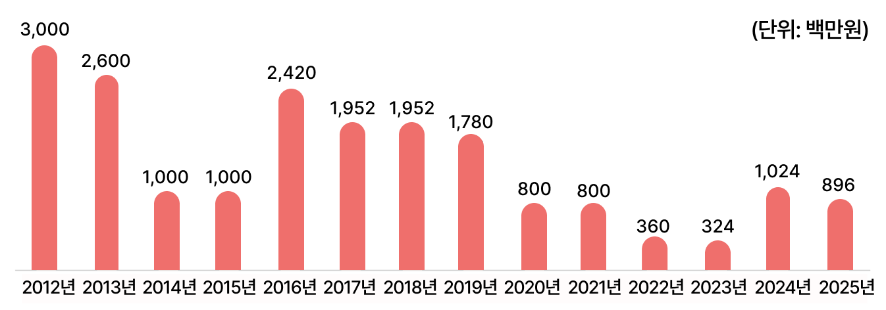
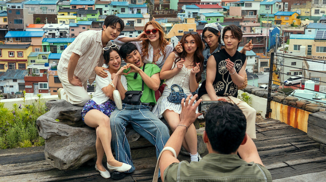
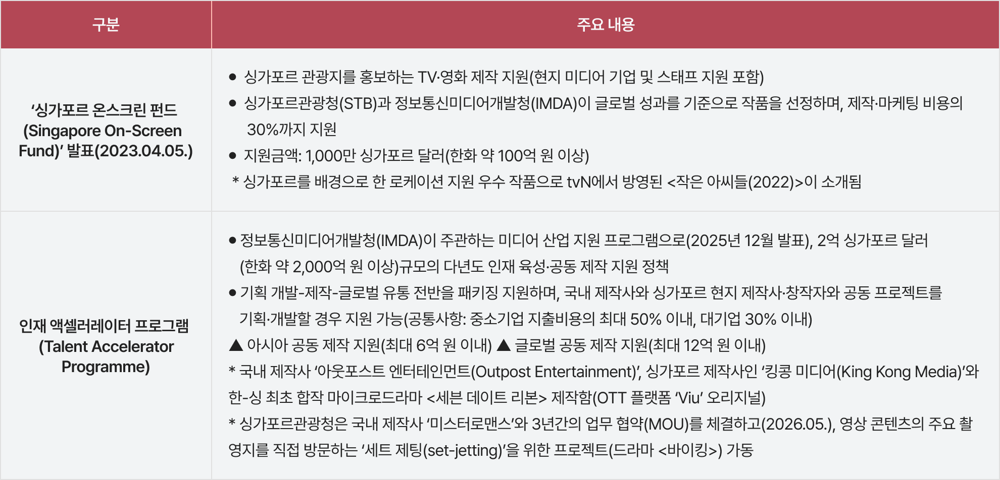
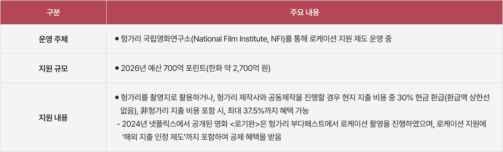
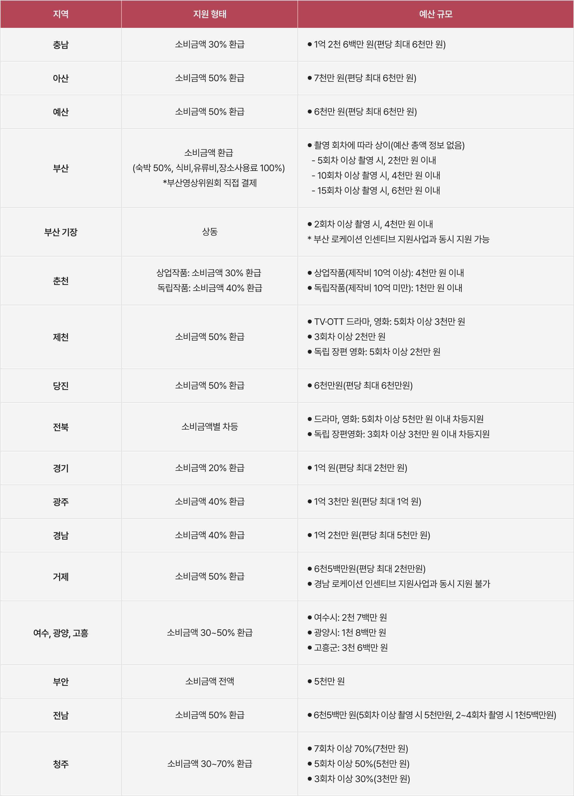

‘로케이션 인센티브’란 외국의 영상콘텐츠제작업자가 국내에서 영상콘텐츠를 촬영하는 경우, 일정한 요건 하에 지급하는 지원금을 말한다.
해외영화의 국내 촬영 유치는 2014년 <어벤저스: 에이지 오브 울트론>의 서울 촬영을 기점으로 국가적 주목을 받기 시작했다. 이후 <블랙 팬서>의 부산 로케이션 촬영으로 해외 작품의 국내 촬영 유치에 관한 관심이 이어졌으나, 체계적인 지원 시스템 구축으로는 발전하지 못하였다.
시범사업으로 시작한 로케이션 인센티브 지원 사업 편성 예산은 초기에는 수십억 원에 이르기도 하였지만, 코로나19 팬데믹 영향으로 영화 제작이 위축되면서 2023년도에는 3억 2,400만 원으로 감소하였다. 다음 해인 2024년도에는 관광진흥개발기금에서 영화발전기금으로 이관되면서 10억 2,400만 원이 편성되었다(아래 [그림 1] 참조).

[그림 1] 영화영상 로케이션 지원 금액 변화
(출처: 영화진흥위원회 홈페이지(www.kofic.or.kr))
로케이션 인센티브 지원의 파생 효과는 크게 지역 내 소비 창출, 국가·지역 이미지 제고 및 연관산업 부가가치 창출, 공동 제작 과정을 통한 제작사·스태프 글로벌 역량 강화의 세 가지 차원에서 살펴볼 수 있다.
첫째, 영상제작물의 로케이션 제작은 지역 내에서의 직접적인 소비
를 창출한다. 뿐만 아니라 촬영지는 ‘관광 명소화’ 및 국가·지역의 이미지를 구축(리브랜딩)하는 데 기여할 수 있다. 최근 K-콘텐츠의 글로벌 인기와 함께 관광, 소비, 뷰티 등 K-컬처 전반에 대한 소비 수요가 확대됨에 따라, 한국의 문화와 지역의 모습을 매력적으로 표현한 영화와 드라마 제작은 지역 내 소비뿐만 아니라 연관된 부가가치를 창출하는데 중요한 역할을 할 수 있다.

[그림 2] 엑스오, 키티(XO, Kitty) 시즌 3 ‘부산을 배경으로 촬영한 장면’
(출처: 부산영상위원회 제공)
둘째, 국가·지역 이미지 제고 및 연관산업 부가가치 창출을 가져온다. 예를 들어 넷플릭스에서 77개국 글로벌 차트 1위를 한 <XO, Kitty> 시즌 3은 부산영상위원회의 국내 촬영 로케이션 지원을 받은 대표적인 작품이다. 2025년 5월 중 5일의 촬영 기간 동안 부산 지역에서 발생한 직접 소비 규모는 약 4억 2,500만 원으로 추산되며, 글로벌 흥행에 따른 도시 홍보 효과라는 무형의 가치를 창출하며 부산 지역 관광객 증가 또한 기대할 수 있다.
셋째, 해외 영상물의 국내 로케이션 촬영 시 국내 제작사 및 스태프와 공동 작업을 수행하게 되는데, 이 과정에서 글로벌 제작·유통의 경험을 쌓아 새로운 고용과 서비스 수출 기회 또한 기대할 수 있다. 국내 제작사 ‘미스터로맨스(Mr. Romance)’는 마블 스튜디오의 <어벤져스: 에이지 오브 울트론>, <블랙 팬서> 프로덕션 참여 경험을 바탕으로 넷플릭스의 <센스8>, 애플TV+의 <파친코> 등 글로벌 제작 시장에서 입지를 강화해 왔으며, 글로벌 기업과의 협업을 지속하고 있다.
2025년 10월, 일본은 2033년까지 자국 콘텐츠의 해외시장 규모 20조 엔(한화 약 188조 이상) 달성을 위한 대규모 지원 정책 지침을 발표하였으며 , 자국 콘텐츠산업의 해외 진출을 위한 지원 기관 신설 등 정부 주도의 투자 및 정책을 강화해나가고 있다. 특히 영상콘텐츠 제작 확대 및 글로벌 도약을 위하여 제작비 환급과 행정 지원 정책을 대폭 강화하였으며, 최근 한국 제작사와의 공동제작 및 해외 대규모 프로젝트의 일본 로케이션 촬영을 적극적으로 유치하고 있다.

<표 1> 일본의 글로벌 영상콘텐츠 제작 지원 정책: JLOX+(Japan content LOcalization and business transformation (X) Plus)
싱가포르는 우수한 디지털 인프라와 높은 콘텐츠 소비율을 바탕으로 글로벌 콘텐츠 현지화의 주요 테스트베드 시장으로 평가받고 있다. 또한 2025년 발표한 ‘Tourism 2040’ 로드맵을 통해 관광객 수 증가를 넘어 ‘문화·엔터테인먼트·소비’ 경험을 결합한 고부가가치 창출과 복합 관광 생태계로의 전환을 추진하고 있다. 이러한 글로벌 핵심 콘텐츠 생태계 전략 추진 과정에서 최근 K-콘텐츠와의 협력·제작 유치를 강화하고 있다.

<표 2> 싱가포르의 글로벌 영상콘텐츠 제작 지원 정책
헝가리는 중동부 유럽 최초로 콘텐츠 제작을 장려하기 위한 세제 혜택을 도입한 국가 중 하나이다. 헝가리 중앙정부의 총지출 대비 문화부문 지출 비율은 7.4%로 OECD 29개국 평균인 2.0%보다 월등히 높은 수치이다. 2018년 6월부터 영화·드라마 제작 등에 대한 세액 공제가 25%에서 30%로 상향되었으며, 스튜디오 건설 등에 사용할 수 있는 개발세 공제도 도입되었다.
현재 헝가리는 글로벌 콘텐츠 제작과 유통에서 중동부 유럽의 관문 역할을 하고 있으며, 부다페스트는 영국 런던에 이어 유럽 내 제2의 영화·드라마 제작 허브로 성장하였다. 특히 세계 최고 수준의 초대형 스튜디오 인프라를 갖춘 글로벌 텐트폴 작품의 제작 기지가 되었으며, 2020년 이후 헝가리에서 제작·촬영된 영상콘텐츠의 수는 5배 증가하였다.

<표 3> 헝가리의 글로벌 영상콘텐츠 제작 지원 정책: 헝가리 영화 인센티브(Hungarian Film Incentive)
(출처: 헝가리 영화 인센티브(Hungarian Film Incentive) 홈페이지 )
국내 영상콘텐츠 로케이션 지원은 영화진흥위원회, 한국영상위원회, 지역별 진흥원·영상위원회가 진행하고 있다. 국내(지역 내) 지출 비용의 30% 이내에서, 환급 비용의 상한과 지역별 예산 및 지원 규모를 고려해 사후 환급 형태로 운영되고 있다.
영화진흥위원회는 영화영상 로케이션 인센티브 지원(2026년 사업 공고 미정)과 영화촬영지 정보 네트워크 구축 사업을 수행해왔으며, 2026년부터는 ‘국제공동제작영화 제작지원(30억 원)’을 신설하여 운영 중이다.
한국영상위원회는 촬영지 정보 플랫폼 ‘필름코리아’를 통해 전국 단위 영화 촬영지 데이터베이스 및 지역 영상위원회 등이 운영 중인 로케이션 사업 정보를 제공하고 있다. 또한 외국 영상물(국제공동제작 포함)의 한국 촬영을 유치하기 위해 로케이션 스카우팅 지원사업도 운영 중인데, 한국에서 3일 이상 촬영을 고려 중인 해외 키스태프 최대 2인을 대상으로 항공, 숙박, 차량, 국내 코디네이터 등 한국 로케이션 스카우팅에 필요한 지원을 제공하는 방식이다.

<표 4> 2026년 국내 지역별 로케이션 인센티브 제작지원 주요 내용
(출처: 필름코리아 홈페이지 )
한국은 영상콘텐츠의 글로벌 경쟁력 강화를 위하여 제작 지원, IP 확보, 인력 양성, 정책 금융, 영상콘텐츠 제작비 세액 공제 등 다양한 방법으로 지원책을 마련하고 있다. 한편 업계에서는 상승하는 제작비와 치열한 경쟁 상황 속에서도 우수한 제작 역량을 바탕으로 글로벌 공동 제작 및 해외 진출을 위한 노력을 진행 중이다.
영상콘텐츠 시장 규모가 큰 북미, 유럽 외에도 일본, 싱가포르, 헝가리 등의 국가에서는 자국의 문화를 알리고 영상산업의 질적 제고 및 연관된 부가가치 창출을 위해 글로벌 프로젝트 규모를 대폭 확대하고 있다. 특히 각 국가와 지역의 문화를 전파하고 영상산업 인프라를 확대하기 위한 ‘로케이션 인센티브 지원’ 정책을 적극적으로 이용하고 있는 것을 알 수 있다.
반면 국내의 로케이션 인센티브 지원 제도는 여러 정책 지원 사업 중에서도 취약한 부분으로 지적되고 있다. 특히 일본, 헝가리 등 경쟁국의 안정적인 세금 환급과 달리, 한국의 지원 방식은 예산 규모의 한계와 조기 소진으로 인해 예측 불가능성이 높다는 점에서 해외 파트너와의 협력과 신뢰에 영향을 줄 수 있는 한계가 지적된다.
현재 지역별 영상위원회에서 책정하고 있는 예산 금액은 1년 평균 1억 원이며(2026년 기준), 제한된 예산 내에서 여러 프로그램으로 나누어 지원하거나 제작비가 높은 드라마 1편만 지원해도 전체 예산이 다 소진되기도 한다. 앞서 살펴본 것처럼 일본은 편당 100억 원을 지원하는 제도를 신설하였고, 헝가리는 정부의 전폭적인 지원으로 할리우드급 스튜디오를 구축하여 글로벌 대작을 촬영하는 생산 기지로 각광을 받고 있다. 싱가포르는 방송영상콘텐츠의 글로벌 인기가 자국 관광 산업과 연계될 수 있는 정책 로드맵을 구성하여 대규모 인센티브 제도를 마련하였다. 우리나라 역시 한국콘텐츠진흥원 및 관련 기관을 중심으로 글로벌 공동 제작 및 인프라 구축 예산을 매년 확대하고 있으나, 여전히 ‘로케이션 인센티브 지원’에 있어서는 한계가 있다.
현재 글로벌 시장에서는 로케이션 인센티브 제도를 활용한 영상콘텐츠 제작 경쟁이 확대되고 있다. 국내 역시 방송영상산업의 글로벌 협력 기회 확대, 인바운드 제작을 통한 직접 소비 효과, 연관 산업 부가 가치 창출이라는 목표 아래 로케이션 인센티브의 재정적·행정적 지원 체계를 함께 논의해야 할 시점이다.
- 김동식(2024). 해외 촬영? 이제는 기본 옵션: 한국영화 해외 촬영의 확장성. <한국영화>, 2024년 10월호. 영화진흥위원회
- 박성환(2025.11.6). 일본, 2033년까지 콘텐츠 해외 시장 188조 원 규모 성장 계획. <경향게임스>
- 성재열(2025). 영화발전기금을 통한 해외 영상물의 국내 촬영 지원에 관한 입법론. <문화 미디어·엔터테인먼트법>, 제19권 제2호, pp. 121-145.
- 송은지(2023). 헝가리 콘텐츠산업의 확장과 새로운 역할. <통합유럽연구>, 제14권 제3호, pp. 233-246.
- 영화진흥위원회(2026). 한국영화 북미지역 진출 및 공동제작 활성화 지원방안 연구.
- 이은지(2025.10.21). 부산서 촬영한 영화에 4000만원 지원했더니 8억 쓰고가. <중앙일보>
- 이채연(2026.4.16). ‘엑스오, 키티 시즌 3’ 글로벌 흥행...부산 로케이션 세계 주목. <퍼스트닷>
- 한국콘텐츠진흥원(2025). 싱가포르 콘텐츠 산업동향: 통합적 미디어 규제와 시장 진출 기회
- Mihály Tóth(2026.4.21). Hungary’s $1B Production Boom Faces a Reality Check as Political Reset Looms. <Budapest Reporter>
- 싱가포르 온스크린 펀드 보도자료
- 싱가포르 인재 액셀러레이트 프로그램 세부 사항